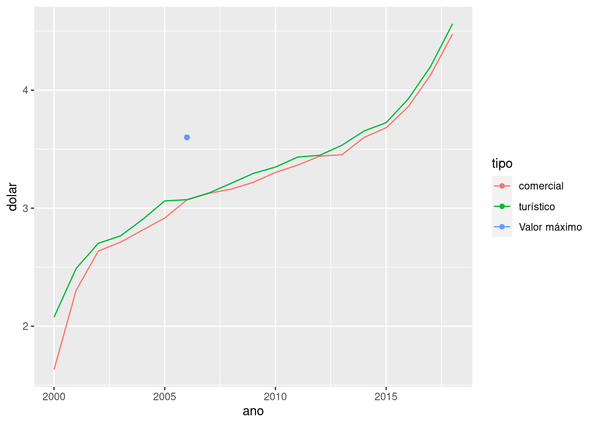

O pacote ggplot2 é provavelmente o mais utilizado para visualização de dados no R. É um pacote muito robusto e com inúmeras possibilidades tanto gráficas como estéticas. Por meio de suas funções é possível plotar dados de forma muito simples. Algumas vezes, no entando, as definições padrões do ggplot não atendem necessidades específicas e então, no meio de tantas opções, as coisas podem ficar um tanto confusas.
Função
Lógica
Detalhe
sum(x)
\(\sum_{i=1}^{k} x\)
Soma de vetores
Muitas vezes, por exemplo, é necessário manipular os símbolos das legendas dos gráficos para garantir maior qualidade e objetividade visual. Não é algo complicado, mas já gastei um bom tempo pesquisando a respeito até conseguir descobrir uma forma eficiente de fazê-lo (o que só ocorreu realmente porque, para me ajudar, decidi ajudar um camarada no StackOverFlow).
Aqui neste tutorial vou explicar como realizar esta tarefa.
Criar os dados
Comecemos criando um conjunto de dados que possa expressar o problema.
'data.frame': 38 obs. of 3 variables:
$ ano : int 2000 2000 2001 2001 2002 2002 2003 2003 2004 2004 ...
$ dolar: num 1.63 2.08 2.3 2.49 2.64 ...
$ tipo : chr "comercial" "turístico" "comercial" "turístico" ...
Criar o gráfico
Agora vamos plotar um gráfico com a série temporal em linha e um ponto correspondente a um valor do ano de 2006.
library(ggplot2)p1 <-ggplot(df) +geom_line(aes(x = ano, y = dolar, colour = tipo)) +geom_point(aes(x =2006, y =3.6, colour ="Valor máximo"))p1

Plot com a legenda incorreta
Já temos um gráfico bastante interessante, porém as legendas não estão adequadamente formatadas, de modo que tanto as linhas estão cortadas por um círculo como o ponto está cortado por uma linha. Queremos adequar os símbolos para que as linhas sejam representadas por linhas e o ponto apenas por um ponto.
Ajustar a legenda
Para conseguir a manipulação que desejamos, é preciso adicionar algumas especificações utilizando a função guides(), conforme indicado abaixo. Dentro dele indicamos o argumento color, e sobrescrevemos o mapeamento estético dos símbolos dentro de guide_legend(), passando os valores que definem o tipo de ponto pch e de linha linetype dentro de uma lista.